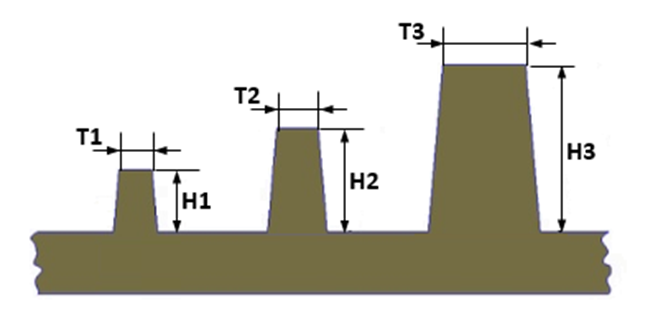

ユーザーが指定したリブ肉厚の値に対して、適切な最大リブ高さが必要です。
リブの高さがリブ肉厚に対して過度に大きい場合、リブの構造的健全性に影響を及ぼす可能性があります。そのようなリブが高荷重を受ける場合には、補強リブを追加する必要があります。リブ肉厚に対応した適切なリブ高さを設定することで、リブ設計の最適化に役立ちます。
最大リブ高さは、リブ肉厚に基づいて選定する必要があります。
ルール構成を使用することで、ユーザーは特定のリブ肉厚に対する適切な最大リブ高さを設定することができます。
このルールでは、リブ肉厚に関連付けて許容される最大リブ高さを指定することができます。

注記：
リブ肉厚が設定された値の中間に位置する場合、本ルールでは線形補間の式に基づいて、対応する最大リブ高さの条件をチェックします。
リブ高さは、リブ支持面の法線方向に沿った最大高さとして算出されます。